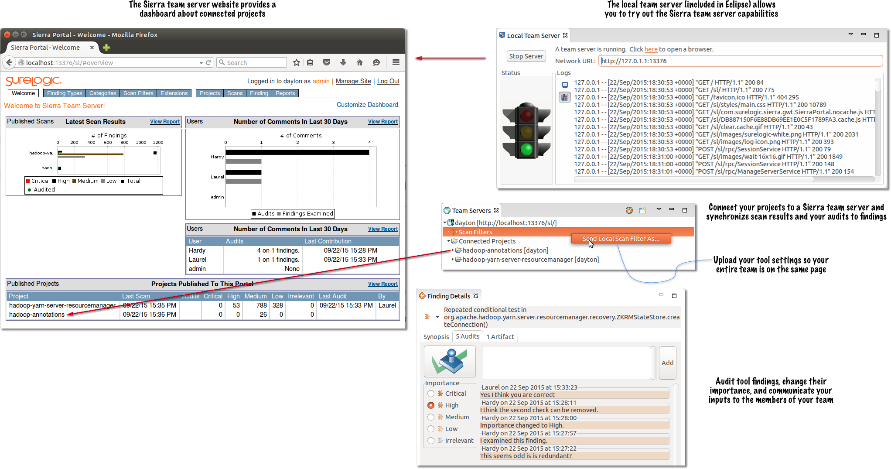

Sierra: Integrate heuristic-static analysis results
Sierra incorporates several Java open source heuristic static analysis tools. What Sierra adds is its ability to integrate and sustainably manage results from multiple analysis sources for a development team over time. Today, Sierra incorporates the FindBugs and PMD (including CPD) heuristic static analysis tools. These tools scan code and match known bug or style patterns. Sierra makes it easy for your team to apply heuristic static analysis tools on a codebase by organizing results, removing duplicates, comparing scans, sharing settings, and managing auditing.
What can Sierra do for you? With its rich Eclipse-based user experience Sierra can
• Find common bugs in your code before it ships (e.g., double-check locking, infinite recursion)
• Help you and your team quickly spot important issues/bugs in key parts of your code
• Understand what changed from one scan of your code to the next (e.g., what's new, what got fixed)
• Share tool settings with your team
• Share comments and information about findings with your team
• Save and share finding queries useful to your team
Sierra helps make it easier for you and your team to get value from tools like FindBugs and PMD in Eclipse. Sierra is deeply integrated into Eclipse to provide a rich client interface that includes a multidimensional query capability that can quickly get you to the results that matter to you.
Sierra supports many team-oriented capabilities such as shared tool settings and shared audits. Many of these capabilities are configured through the Sierra team server website which is still under development. A preview of the Sierra team server website is included as the "Local Team Server" in the Sierra release so you can try it out and send us suggestions and problems.
Videos
The videos below show Sierra in use. Often on widely used open source and commercial software. These videos give a sense of Sierra's capabilities and how you interact with it in Eclipse. (Note that some of the videos might have been shot with an older version of the tool so please consult the documentation if something looks different.) The Sierra user guide contains further documentation including a quick start, tutorials, and reference information. You can ask questions about Sierra use on our forum.
Using SureLogic Sierra on a MOOC programming exercise
This video shows off using SureLogic Sierra and JSure tools (static analysis) to uncover and help to fix issues in code from a Android MOOC Programming Exercise. We also stress the use of Git to track changes. The SureLogic Flashlight tool (dynamic analysis) is demonstrated on the exercise app as well, but it's results are not too interesting for this code.